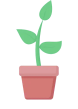
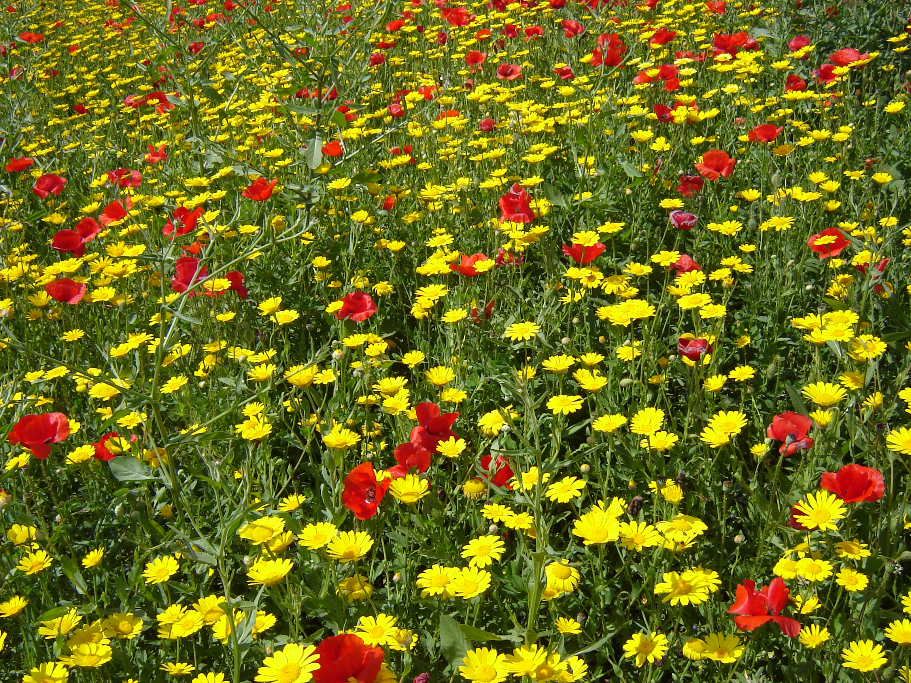
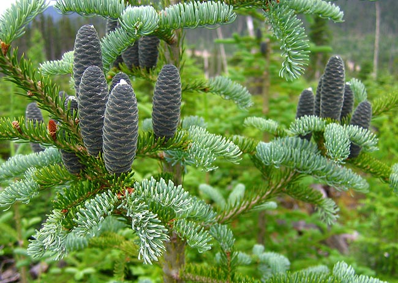

A la decouverte du monde végétale
Comment les végétaux ont-ils conquis la terre ?
Allons à la découverte du monde végétal à travers une expérience illustrative et interactive.


PlantEvoAllons à la découverte du monde végétal à travers une expérience illustrative et interactive.





